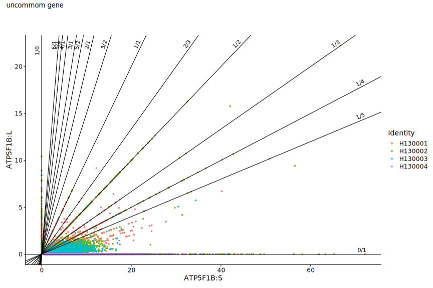

Quantized Length Differential Expression
DNA transcript termination is regulated by the polyadenylation signal (PAS) given by the hexamer AATAAA on the DNA coding strand. When RNA Polymerase II reaches the PAS site, the cleavage-some machinery promptly acts on the out-coming transcript by cleaving it at 5' and capping it with a poly-A. Meanwhile, the ongoing pol II gets detached from the elongated DNA and the remaining 3' RNA is degraded by XRN2.
Up stream A reach regions and downstream CA reach regions to PAS sites in the DNA coding strand are important to improve PAS effectiveness. There are few PAS hexamer variants which still work as transcript termination sites. All other mutations will decrease the capability of the cleavage-some in severing out-coming RNA and detaching pol II which on the other hand will continue to transcribe generating longer transcripts.
Both short (3') and long reads single cell RNA-seq allows to determine the end of transcripts with respective precisions given by the techs. In case of 10X, the abundance of reads peaked inside a specific region of the UTR 3' preceding the PAS, or for full length transcript, the abrupt decay of reads beyond the PAS defines the transcript cleavage site.
Library prep can include reads from cytoplasmic or nuclear only transcripts depending on protocols. Considering that transcript termination is well upstream splicing and splice-some activity, processing data after splicing requires to map reads, ie. falling in the UTR 3' region, using a splice aware aligner which permits to define reads distributions independently from splicing generated isoforms.
Mutations, delays of the cleavage-some in getting to PAS sites as well as energetic noise might induce shortening and lengthening of transcripts. This phenomenon is well known to occur as result of cell ageing, cancer disease and microbioma variations of microbiota-host paracrine cooperation.
So, it is worth to notice two aspects: 1) PAS hexamer sequence does not implies the presence of a stop codon on the transcript, because its starting site has not to be module 3 in respect the initial transcript site; 2) isoforms generated by alternative PAS activities differs from spliced isoforms in terms of geolocation and involved molecular machineries.
On one hand, alternate PAS could allow to infer copy number alterations and mutation phasing. On the other hand, longer transcripts and gene fusion, generated via the somehow skipped PAS, are instable and subjected to higher chances of rapid degradation caused by premature folding and malformed pre-/mature mRNA. In part, this might be responsible for single cell read count sparsity and zero inflated gene expressing distributions.
A particular phenomenon observed in alternative PAS cytoplasmic mRNA is transcript quantization. Partitioning single cell length differential expression of transcripts in two classes, gene wise defined as short and long, we observed that each gene expression has a bi-variate multimodal distribution strongly peaked over few rational defined values.
This quantization effect renders easy to force a partition of a gene expression over the few rational values as a form of representation of cell states.
This can be associated to CNA. The number of peaks excessively grater than two might also be explained by long/short partition instead of peak/isoform wise partition. Nonetheless, classification of cells by their gene rational expressed values shows that chromosomally nearby genes belong to different classes.
Furthermore, by-product of RNA degradation could strongly regulate transcription and translation.